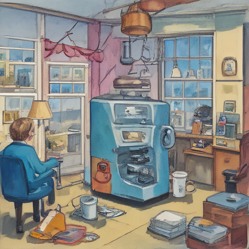

Today, I woke up to the news of an outage at RAF Fairford and Chris Van Hollen's office being hit by a tech glitch. As if that wasn't enough, my morning coffee machine decided to go on strike. It was one of those days where everything seems to be out of sync, but somehow I found myself laughing it off with a cup of tea instead.

Keywords: Chris Van Hollen, RAF Fairford, global Microsoft outage
Fictional diary entry.